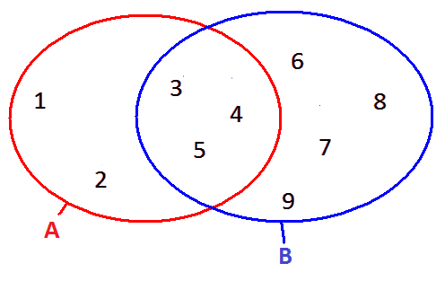
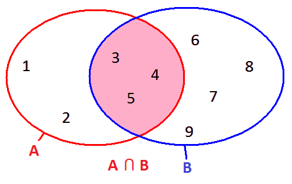

Példaprogram: halmazok metszete
Adott két halmaz: az A és a B.
A = {1,2,3,4,5}
B = {3,4,5,6,7,8,9}

Feladat: képezzük az A és B halmazok metszetét, a $C = A \cap B$ halmazt:

using System;
using System.Collections.Generic;
class Program
{
private static void HalmazMutat(HashSet<int> halmaz)
{
Console.Write("{");
foreach (int elem in halmaz)
{
Console.Write(" {0}", elem);
}
Console.WriteLine(" }");
}
static void Main()
{
HashSet<int> A = new HashSet<int>(){1,2,3,4,5};//itt a halmazokat tömbfelsiorolásból képezzük
HashSet<int> B = new HashSet<int>(){3,4,5,6,7,8,9};
Console.ForegroundColor = ConsoleColor.Yellow;
Console.WriteLine("Az A halmaz:");
HalmazMutat(A);
Console.WriteLine("A B halmaz:");
HalmazMutat(B);
//halmazok metszete:
HashSet<int> C = new HashSet<int>(A);
C.IntersectWith(B);
Console.WriteLine();
Console.WriteLine(" A és B metszete a C:");
HalmazMutat(C);
}
}